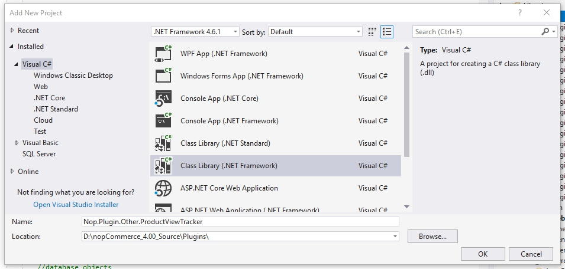
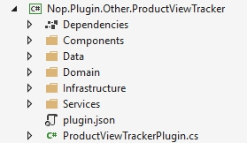

具備資料存取的插件 (4.20 與更早版本)
在本教學中，我將使用 nopCommerce 外掛架構來實作一個商品瀏覽追蹤器。在開始開發之前，請務必確認您已閱讀、理解並成功完成下列教學課程。我將會跳過先前文章中已涵蓋的部分說明，但您可以透過提供的連結進行複習。
我們將從資料存取層開始編寫程式碼，接著進入服務層，最後以相依性注入結束。
Note
此插件的實際應用價值有待商榷，但我一時想不出什麼 nopCommerce 原生未包含且適合在適當篇幅內介紹的功能。如果您在正式營運環境中使用此插件，我不提供任何保證。我總是對成功案例感到興趣，若此文章不僅具備教學價值，還能對您有所幫助，我將感到非常高興。
入門指南
建立一個新的類別庫專案「Nop.Plugin.Other.ProductViewTracker」。

新增下列資料夾與 plugin.json 檔案。

關於 plugin.json 檔案的詳細資訊，請參閱 plugin.json 檔案。
接著，加入對下列專案的參考：Nop.Core、Nop.Data、Nop.Web.Framework
資料存取層（又名：在 nopCommerce 中建立新實體）
我們將在「domain」命名空間內建立一個名為 ProductViewTrackerRecord 的公開類別。此類別繼承自 BaseEntity，除此之外這是一個非常單純的檔案。有一點需要記住的是，所有屬性都被標記為 virtual，這不只是為了好玩。由於 Entity Framework 實例化與追蹤類別的方式，資料庫實體必須具備虛擬屬性。另一點需要注意的是，我們沒有導覽屬性（關聯屬性），我稍後會再詳細說明。
namespace Nop.Plugin.Other.ProductViewTracker.Domain
{
public class ProductViewTrackerRecord : BaseEntity
{
public virtual int ProductId { get; set; }
public virtual string ProductName { get; set; }
public virtual int CustomerId { get; set; }
public virtual string IpAddress { get; set; }
public virtual bool IsRegistered { get; set; }
}
}
檔案位置：若要確定特定檔案應存放的位置，請分析其命名空間並據此建立檔案。
接下來要建立的是 Entity Framework 對應類別。我們在對應類別中對應資料行、資料表關聯以及資料庫資料表。
namespace Nop.Plugin.Other.ProductViewTracker.Data
{
public class ProductViewTrackerRecordMap : NopEntityTypeConfiguration<ProductViewTrackerRecord>
{
/// <summary>
/// Configures the entity
/// </summary>
/// <param name="builder">The builder to be used to configure the entity</param>
public override void Configure(EntityTypeBuilder<ProductViewTrackerRecord> builder)
{
builder.ToTable(nameof(ProductViewTrackerRecord));
//Map the primary key
builder.HasKey(record => record.Id);
//Map the additional properties
builder.Property(record => record.ProductId);
//Avoiding truncation/failure
//so we set the same max length used in the product tame
builder.Property(record => record.ProductName).HasMaxLength(400);
builder.Property(record => record.IpAddress);
builder.Property(record => record.CustomerId);
builder.Property(record => record.IsRegistered);
}
}
}
下一個類別是資料存取層中最複雜且最重要的類別。Entity Framework 的 Object Context 是一個傳遞類別，它提供我們資料庫存取權限，並協助追蹤實體狀態（例如：新增、更新、刪除）。此 Context 也用於產生資料庫結構描述（Schema）或更新現有的結構描述。在自訂 Context 類別中，我們無法參考先前存在的實體，因為這些型別已經關聯到另一個 Object Context。這也是為什麼我們的追蹤記錄中沒有複雜導覽屬性的原因。
namespace Nop.Plugin.Other.ProductViewTracker.Data
{
public class ProductViewTrackerRecordObjectContext : DbContext, IDbContext
{
public ProductViewTrackerRecordObjectContext(DbContextOptions<ProductViewTrackerRecordObjectContext> options) : base(options)
{
}
protected override void OnModelCreating(ModelBuilder modelBuilder)
{
modelBuilder.ApplyConfiguration(new ProductViewTrackerRecordMap());
base.OnModelCreating(modelBuilder);
}
public new virtual DbSet<TEntity> Set<TEntity>() where TEntity : BaseEntity
{
return base.Set<TEntity>();
}
public virtual string GenerateCreateScript()
{
return Database.GenerateCreateScript();
}
public virtual IQueryable<TQuery> QueryFromSql<TQuery>(string sql) where TQuery : class
{
throw new NotImplementedException();
}
public virtual IQueryable<TEntity> EntityFromSql<TEntity>(string sql, params object[] parameters) where TEntity : BaseEntity
{
throw new NotImplementedException();
}
public virtual int ExecuteSqlCommand(RawSqlString sql, bool doNotEnsureTransaction = false, int? timeout = null, params object[] parameters)
{
using (var transaction = Database.BeginTransaction())
{
var result = Database.ExecuteSqlCommand(sql, parameters);
transaction.Commit();
return result;
}
}
public void Install()
{
//create the table
this.ExecuteSqlScript(GenerateCreateScript());
}
public void Uninstall()
{
//drop the table
this.DropPluginTable(nameof(ProductViewTrackerRecord));
}
public IList<TEntity> ExecuteStoredProcedureList<TEntity>(string commandText, params object[] parameters) where TEntity : BaseEntity, new()
{
throw new NotImplementedException();
}
public IEnumerable<TElement> SqlQuery<TElement>(string sql, params object[] parameters)
{
throw new NotImplementedException();
}
public int ExecuteSqlCommand(string sql, bool doNotEnsureTransaction = false, int? timeout = null, params object[] parameters)
{
throw new NotImplementedException();
}
public virtual void Detach<TEntity>(TEntity entity) where TEntity : BaseEntity
{
throw new NotImplementedException();
}
public IQueryable<TQuery> QueryFromSql<TQuery>(string sql, params object[] parameters) where TQuery : class
{
throw new NotImplementedException();
}
public virtual bool ProxyCreationEnabled
{
get => ProxyCreationEnabled;
set => ProxyCreationEnabled = value;
}
public virtual bool AutoDetectChangesEnabled
{
get => AutoDetectChangesEnabled;
set => AutoDetectChangesEnabled = value;
}
}
}
應用程式啟動
此部分會註冊我們在先前步驟中建立的紀錄物件 context。
using Microsoft.AspNetCore.Builder;
using Microsoft.Extensions.Configuration;
using Microsoft.Extensions.DependencyInjection;
using Nop.Core.Infrastructure;
using Nop.Plugin.Other.ProductViewTracker.Data;
using Nop.Web.Framework.Infrastructure.Extensions;
namespace Nop.Plugin.Misc.RepCred.Infrastructure
{
/// <summary>
/// Represents object for the configuring plugin DB context on application startup
/// </summary>
public class PluginDbStartup : INopStartup
{
/// <summary>
/// Add and configure any of the middleware
/// </summary>
/// <param name="services">Collection of service descriptors</param>
/// <param name="configuration">Configuration of the application</param>
public void ConfigureServices(IServiceCollection services, IConfiguration configuration)
{
//add object context
services.AddDbContext<ProductViewTrackerRecordObjectContext>(optionsBuilder =>
{
optionsBuilder.UseSqlServerWithLazyLoading(services);
});
}
/// <summary>
/// Configure the using of added middleware
/// </summary>
/// <param name="application">Builder for configuring an application's request pipeline</param>
public void Configure(IApplicationBuilder application)
{
}
/// <summary>
/// Gets order of this startup configuration implementation
/// </summary>
public int Order => 11;
}
}
服務層
服務層負責連接資料存取層與表現層。由於在程式碼中混合任何類型的職責是不好的做法，因此每一層都需要被隔離。服務層將資料層與商業邏輯封裝起來，而表現層則相依於服務層。由於我們的任務非常簡單，我們的服務層僅負責與 Repository 進行通訊（在 nopCommerce 中，Repository 扮演著物件內容的外觀模式角色）。
namespace Nop.Plugin.Other.ProductViewTracker.Services
{
public interface IProductViewTrackerService
{
/// <summary>
/// Logs the specified record.
/// </summary>
/// <param name="record">The record.</param>
void Log(ProductViewTrackerRecord record);
}
}
namespace Nop.Plugin.Other.ProductViewTracker.Services
{
public class ProductViewTrackerService : IProductViewTrackerService
{
private readonly IRepository<ProductViewTrackerRecord> _productViewTrackerRecordRepository;
public ViewTrackingService(IRepository<ProductViewTrackingRecord> productViewTrackerRecordRepository)
{
_productViewTrackerRecordRepository = productViewTrackerRecordRepository;
}
/// <summary>
/// Logs the specified record.
/// </summary>
/// <param name="record">The record.</param>
public virtual void Log(ProductViewTrackerRecord record)
{
if (record == null)
throw new ArgumentNullException(nameof(record));
_productViewTrackerRecordRepository.Insert(record);
}
}
}
相依性注入
Martin Fowler 對於相依性注入（Dependency Injection）或控制反轉（Inversion of Control）有非常詳盡的描述。我不會重複他的工作，您可以點擊 此處 閱讀他的文章。相依性注入會管理物件的生命週期，並提供實例供相依物件使用。首先，我們需要設定相依性容器（Dependency Container），讓它了解將要控制哪些物件，以及這些物件的建立規則為何。
namespace Nop.Plugin.Other.ProductViewTracker.Infrastructure
{
public class DependencyRegistrar : IDependencyRegistrar
{
private const string CONTEXT_NAME = "nop_object_context_product_view_tracker";
public virtual void Register(ContainerBuilder builder, ITypeFinder typeFinder, NopConfig config)
{
builder.RegisterType<ProductViewTrackerService>().As<IProductViewTrackerService>().InstancePerLifetimeScope();
//data context
builder.RegisterPluginDataContext<ProductViewTrackerRecordObjectContext>(CONTEXT_NAME);
//override required repository with our custom context
builder.RegisterType<EfRepository<ProductViewTrackerRecord>>()
.As<IRepository<ProductViewTrackerRecord>>()
.WithParameter(ResolvedParameter.ForNamed<IDbContext>(CONTEXT_NAME))
.InstancePerLifetimeScope();
}
public int Order => 1;
}
}
在上述程式碼中，我們註冊了不同型別的物件，以便稍後可以將它們注入到 Controller、服務（Service）與 Repository 中。既然我們已經涵蓋了新的主題，接下來我將帶回一些舊的主題，以便我們完成此外掛的開發。
View component
讓我們來建立一個 view component：
namespace Nop.Plugin.Other.ProductViewTracker.Components
{
[ViewComponent(Name = "ProductViewTracker")]
public class ProductViewTrackerViewComponent : NopViewComponent
{
private readonly IProductService _productService;
private readonly IProductViewTrackerService _productViewTrackerService;
private readonly IWorkContext _workContext;
public ProductViewTrackerViewComponent(IWorkContext workContext,
IProductViewTrackerService productViewTrackerService,
IProductService productService)
{
_workContext = workContext;
_productViewTrackerService = productViewTrackerService;
_productService = productService;
}
public IViewComponentResult Invoke(int productId)
{
//Read from the product service
Product productById = _productService.GetProductById(productId);
//If the product exists we will log it
if (productById != null)
{
//Setup the product to save
var record = new ProductViewTrackerRecord();
record.ProductId = productId;
record.ProductName = productById.Name;
record.CustomerId = _workContext.CurrentCustomer.Id;
record.IpAddress = _workContext.CurrentCustomer.LastIpAddress;
record.IsRegistered = _workContext.CurrentCustomer.IsRegistered();
//Map the values we're interested in to our new entity
_productViewTrackerService.Log(record);
}
return Content("");
}
}
}
外掛安裝程式
namespace Nop.Plugin.Other.ProductViewTracker
{
public class ProductViewTrackerPlugin : BasePlugin
{
private readonly ProductViewTrackerRecordObjectContext _context;
public ProductViewTrackerPlugin(ProductViewTrackerRecordObjectContext context)
{
_context = context;
}
public override void Install()
{
_context.Install();
base.Install();
}
public override void Uninstall()
{
_context.Uninstall();
base.Uninstall();
}
}
}
使用方式
追蹤程式碼應新增至 ProductTemplate.Simple.cshtml 與 ProductTemplate.Grouped.cshtml 檔案中。這些檔案是商品範本。
@await Component.InvokeAsync("ProductViewTrackerIndex", new { productId = Model.Id })
附註：您也可以將其實作為一個小工具。在這種情況下，您就不需要編輯 cshtml 檔案。